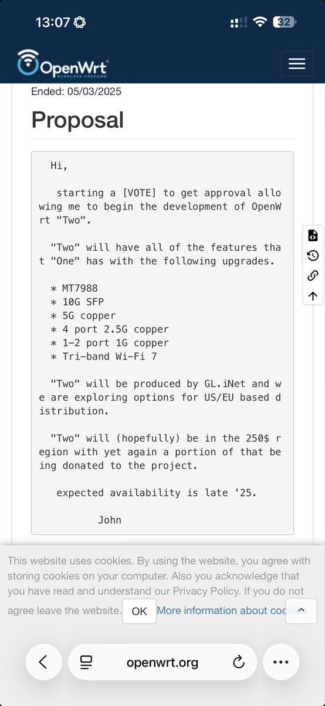

小虚空🍥
@tokerumaisurii
@tanpenguin0615 喵了眼确实差不多配置。
其实One就是跟香蕉派联名的，但One的外观实在太难看了，而Two的联合厂商GL.iNet毕竟是面向不止工程测试人群的，也考虑好看和易用性的，所以我愿意等Two出来做个对比。

谭企鹅
@tanpenguin0615
@tokerumaisurii 考虑香蕉派吗，光电转换+pppoe+NAT一机搞定🧐 https://t.co/9e1m38nLUO